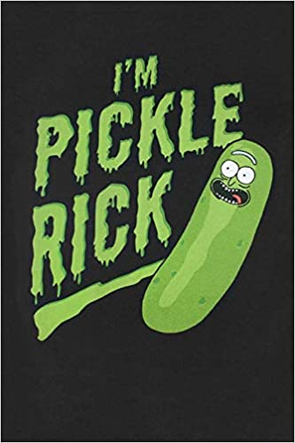
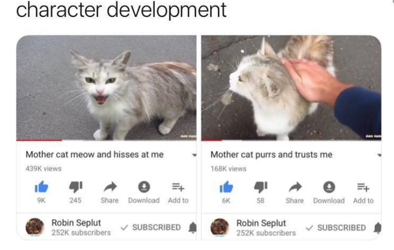
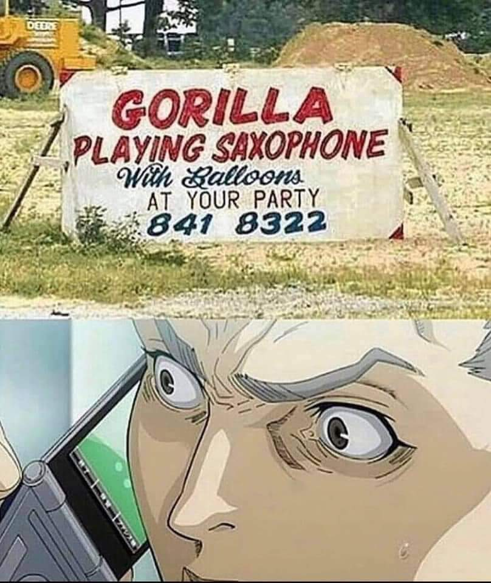
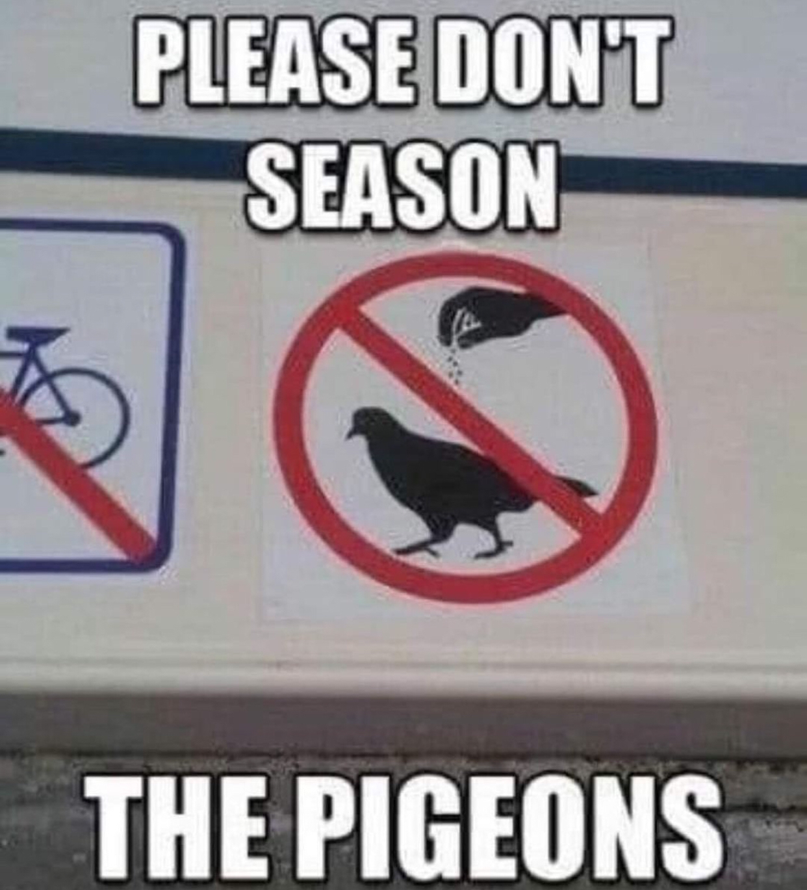
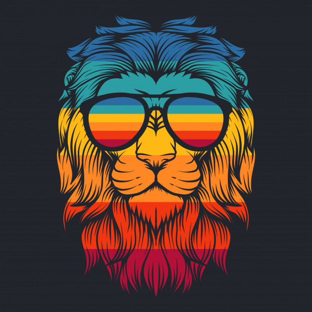
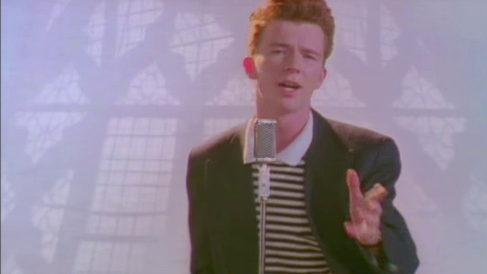

Pickle Rick
Pickle Rick is a pretty great joke since he just turns himself into a pickle in the TV show
Character development from a cat
Rarely happens with outside cats and especially mother cats so this is impressive
Gorilla playing a saxophone
I really hope that this is real because that would be something I'd watch
Seasoning the pigeons
I really wonder why they started to season them in the first place...

Let me talk about god real quick...
I don't really know why a talking shark has anything to do with god.

Lion wearing colorful sunglasses
This picture looks pretty cool which is why I love it

Cool Sunset
This is a pretty cool looking sunset
Sending this picture to friends
I honestly like to see the reaction from my friends when I send this
